Overview
I saw a broken process at my own company (paper forms, lost mileage reports, frustrated employees) and designed the fix. Gauge is a vehicle reporting app built around one number: the trip mileage that gets billed to a project. Three iterations, and the middle one is the reason the last one works.
Paper forms, lost mileage reports, and an email chain standing in for a system.
How do you replace paper without building something that feels heavier than the paper did?
As a Project Administrator at Barge Design Solutions, an architecture and engineering firm, I had a front-row seat to how broken the company’s vehicle reporting process was. I interviewed employees and shadowed the existing workflow, and the same three failures kept surfacing, each one a place where paper quietly cost the company time or trust.
Inconsistent mileage tracking.
Reporting was manual and error-prone, which led to delays and distrust in reimbursements. Employees wanted to track mileage as they drove rather than reconstructing trips from memory a week later.
No real inspection process.
Pre-trip inspections were either skipped or done on paper that got lost. There was no consistent record of vehicle condition, which is a liability gap before it’s a design one.
Manual admin work.
Admins relied on paper reports and email chains. Without centralized digital tracking, pulling a report or verifying trip data was tedious and unreliable.
Three failures, one root cause: the number that mattered was captured last.
Every breakdown in the list traces back to trip mileage being written down after the fact, by someone who was no longer in the vehicle. Everything downstream (the reimbursement, the project billing, the audit trail) inherits that one delay.
In practice that meant the mileage often wasn’t written down at all. People reconstructed a week of driving from memory, so the number being billed to a project was a guess. When it did get written down it was handwritten, and reading someone else’s handwriting is its own guess. As the admin I either picked the digit that looked most likely or walked back to the driver and asked, which put a second person’s time into a number that should have taken two seconds to capture.
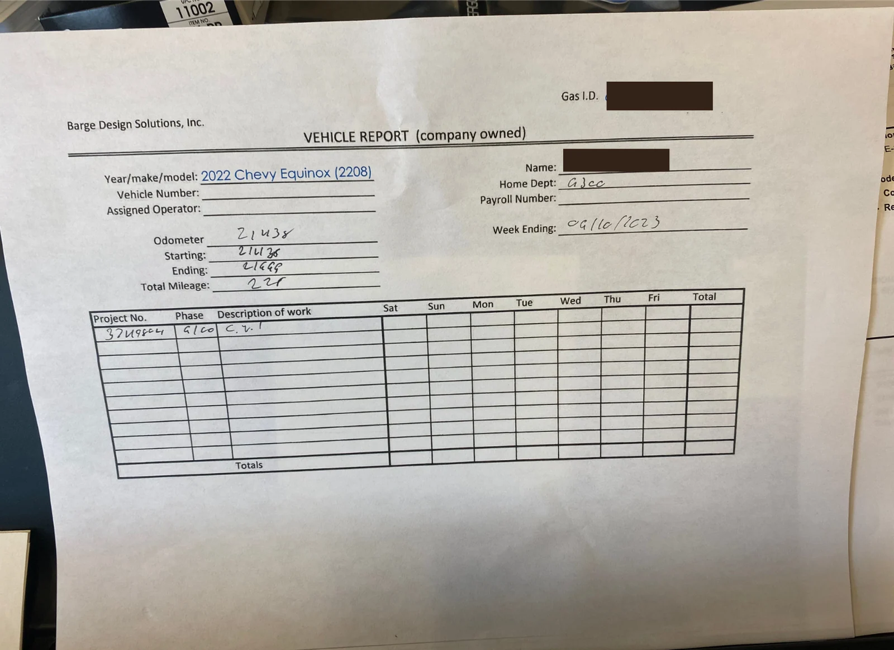
The form Gauge replaced. One sheet per vehicle per trip.
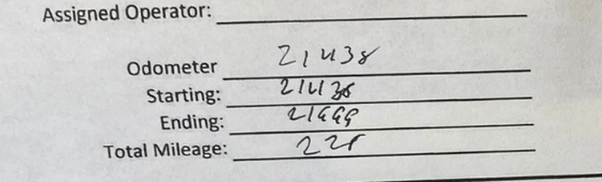
Written over. Illegible. 227? 225? 221?Messy handwriting turns every digit into a question, and the total is the number billed to the project.
The paper form wasn’t the problem. It was a symptom.
Shadowing the workflow changed what I thought I was designing. The thing the company actually ran on was trip mileage, because that number gets billed to a project, and every failure in the process traced back to mileage being captured late, captured wrong, or not captured at all.
That reframed the brief. A digital version of the same form would have been a faithful translation of a broken process. What the design had to do was make the billed number the easiest thing in the app to produce, and make everything around it cheap enough that people would still bother.
Two versions I had to build before the third one could be simple
Version 1 in 2023, version 2 in early 2025, version 3 this year. Both of the earlier ones are here on purpose. The third version only makes sense as an answer to what the first two got wrong, and I would rather show that argument than assert it.
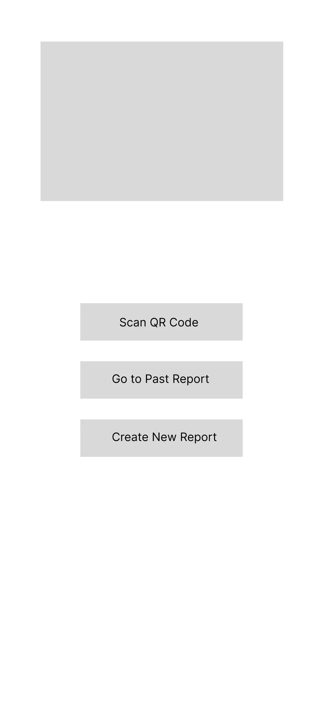
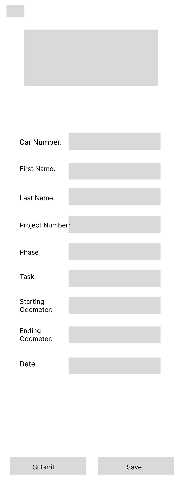
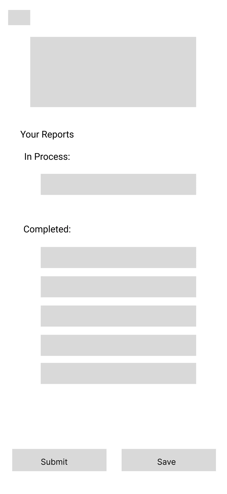
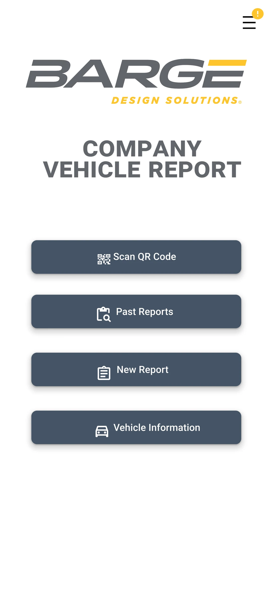
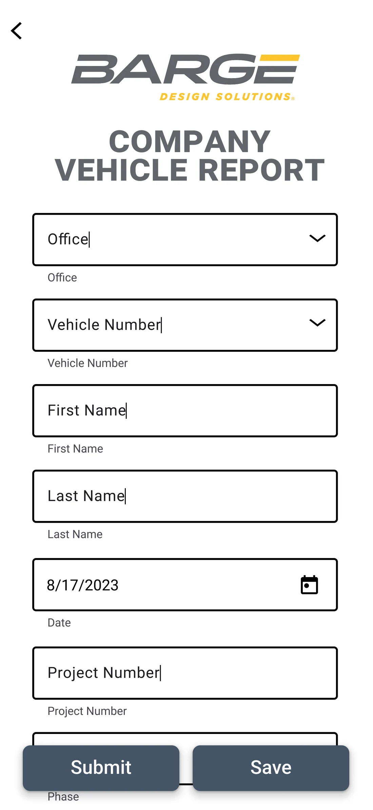
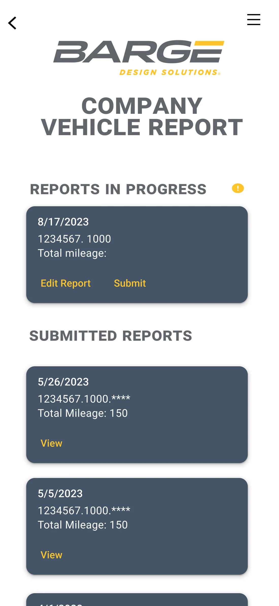
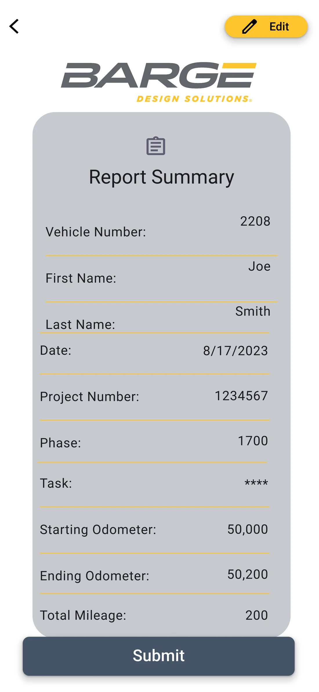
Wireframes, then the first build. Click any to see it closer
I started where the paper started. Version 1 is the vehicle report translated to a screen, field for field: office, vehicle number, first name, last name, date, project number, phase, task, starting odometer, ending odometer. I wireframed it, then built it in the company’s grey and yellow so it would read as an internal tool people already trusted.
It moved the paper onto a phone without changing when the number got captured. Someone still had to hold ten values in their head and type them in at the end of a week, which is the exact failure I set out to fix. A form that is faithful to a broken process inherits the process.
The reframe that trip mileage was the only field the business actually needed, and that everything else on the form existed to identify it. One idea from version 1 survived intact: Scan QR Code was already sitting on that first home screen. It turned out to be the answer rather than a shortcut.
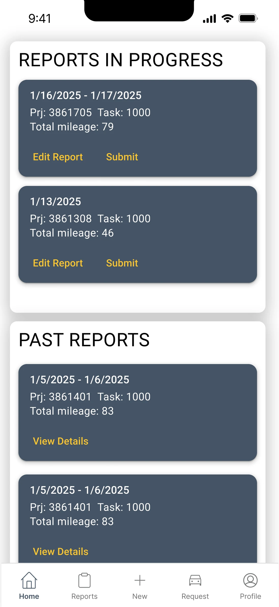
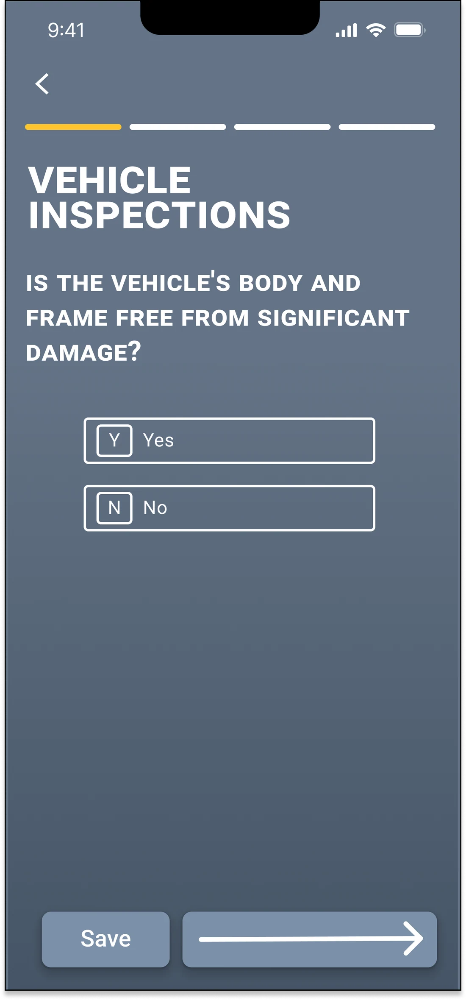
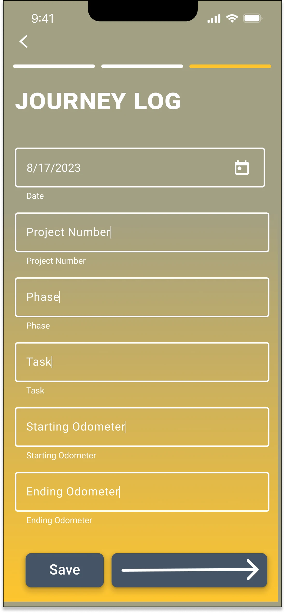
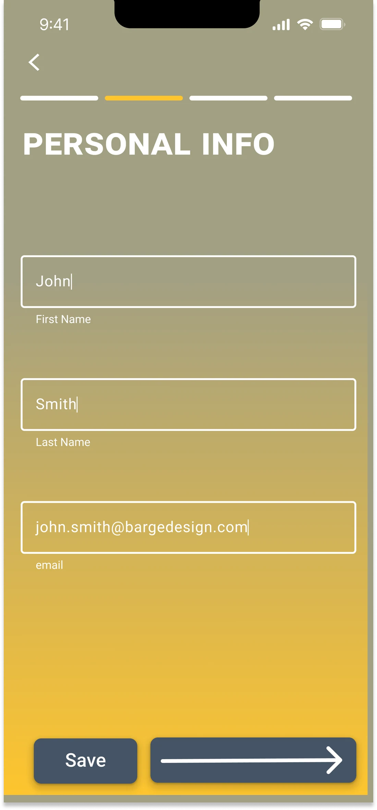
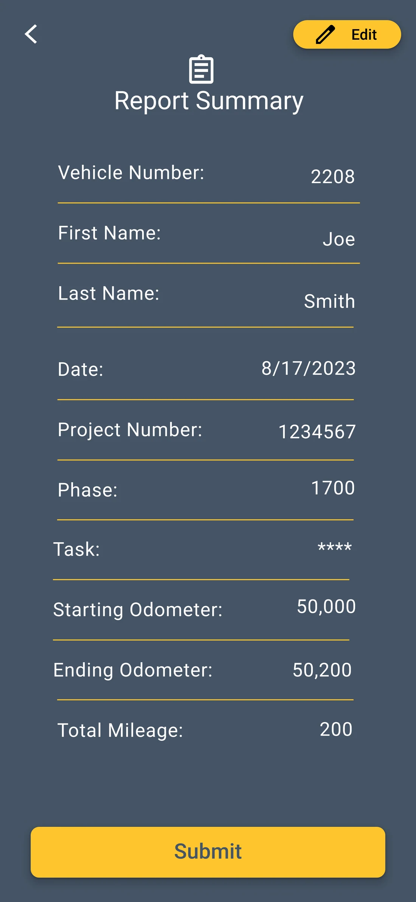
The second build, with inspections added. Click any to see it closer
A new safety compliance requirement meant adding vehicle inspections to the flow, and I accommodated it the obvious way: more screens, more steps, a full inspection sequence sitting between the employee and the thing they actually came to do. Each check got its own screen with a single yes or no on it, behind a four-step progress bar.
It worked and people hated it. Users could complete the process, but testing surfaced real frustration: the app now felt heavier than the paper version it was replacing. Compliance had been satisfied and the product had been made worse, which is the trade I should have caught before building it.
Version 3 stripped it back. QR scanning auto-fills the vehicle so manual entry disappears, the inspection checklist collapses into a single tappable screen with flagging, and trip mileage moves to the front as the hero number. Fewer screens, and micro-interactions that make the flow feel fast rather than bureaucratic.
Every interaction either produces the billed number or gets out of its way.
Version 3 is built around that one rule. Nothing in the flow exists to document the process for its own sake; each step either shortens the path to the mileage figure or protects the company’s record of the vehicle.
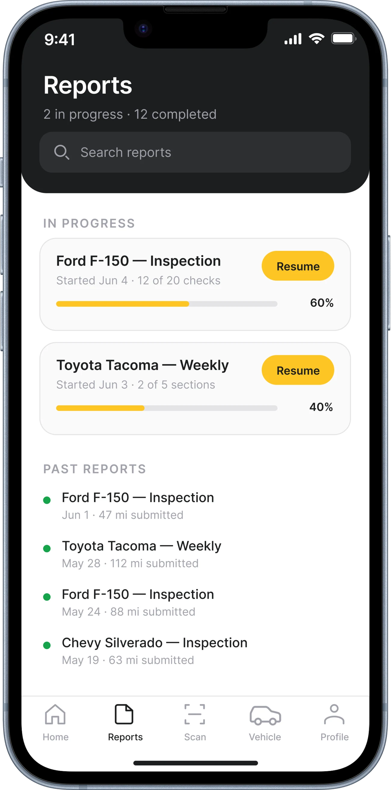
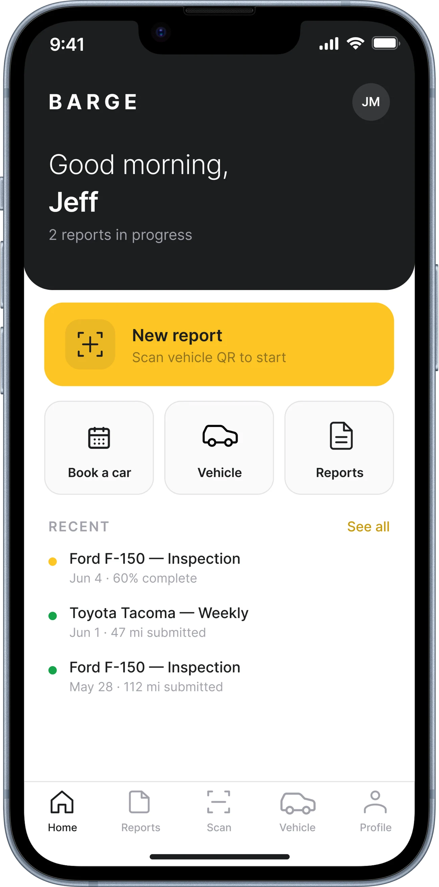
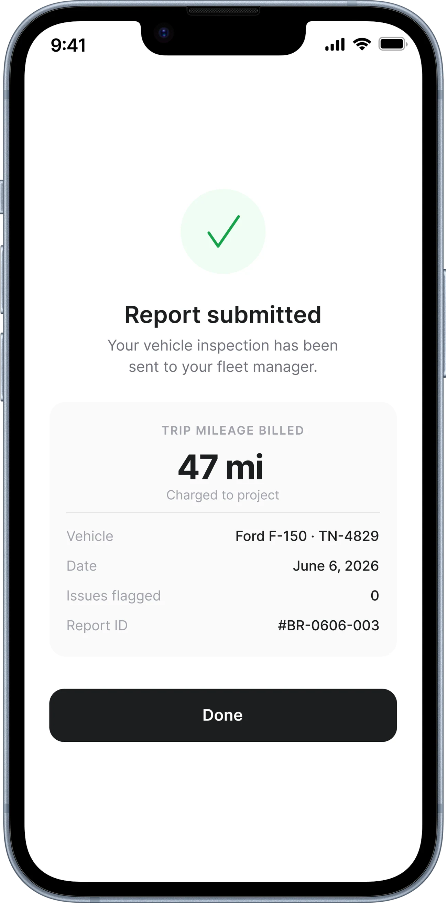
Best explored on a laptop
QR code scanning auto-fills the vehicle information, so the employee never types a plate number or an odometer reading from memory. It removes the single largest source of bad data in the old process and it makes starting a report take about two seconds.
Trip mileage is the number billed to projects, so it sits front and center with a Billed to project badge attached. Surfacing it gave employees confidence their travel costs were being attributed correctly, which was as much a trust problem as an accuracy one.
The compliance checklist became a single tappable screen with flag capability rather than a sequence. Same coverage, a fraction of the friction, and flagging a problem is now faster than ignoring it was on paper.
Streamlined for Barge specifically. The team already knew SharePoint and used BST for accounting, so the admin looks like a SharePoint list and every trip checks off once it’s in BST.
Every tester submitted unassisted, and the detail they raised unprompted was the billing badge.
Submission without struggle. Every tester submitted a report unassisted. The digital process was immediately faster and less error-prone than paper.
QR scan equals instant confidence. Auto-filling vehicle details removed the friction point users complained about most, and it changed their posture toward the whole app.
Mileage billing clarity. The hero number plus the Billed to project badge was the detail testers mentioned unprompted. It answered a question the old process left open.
Figma for the design, Claude Code to make it tappable.
- What the machine did
- Turned the Figma designs into clickable prototypes, and helped me iterate on them.
- What I did
- Everything else. The problem framing, the research, three rounds of screens, the testing, the write-up.
Scale · Human–Machine Collaboration, Dubai Future Foundation
What this one changed about how I work
Gauge was one of the first things I ever designed, and I kept coming back to it for three years. Both earlier versions are on this page on purpose. The distance between the first screen and the last one is the part of this project I am proudest of.
Solving the design problem is half the work
Gauge stayed a prototype. Leadership was excited about it, but internal politics made implementation difficult. Navigating organizational dynamics to get solutions adopted is its own design challenge.
A requirement satisfied can still be a product made worse
Version 2 met the compliance ask completely and people hated using it. I now treat a new requirement as a design problem to absorb rather than a set of screens to append.
I don’t wait for a brief
I identified a broken process in my own workplace and designed the fix. That instinct, seeing systems that could work better and doing something about it, is what drew me to interaction design.
What I’d measure
Gauge stayed a prototype, so I never got live numbers. The one I would have watched is the gap between a trip ending and its mileage being recorded, because that gap is the whole problem: days on paper, minutes if the design works. Not time in the app. On an internal tool, people spending longer in it means I have failed.